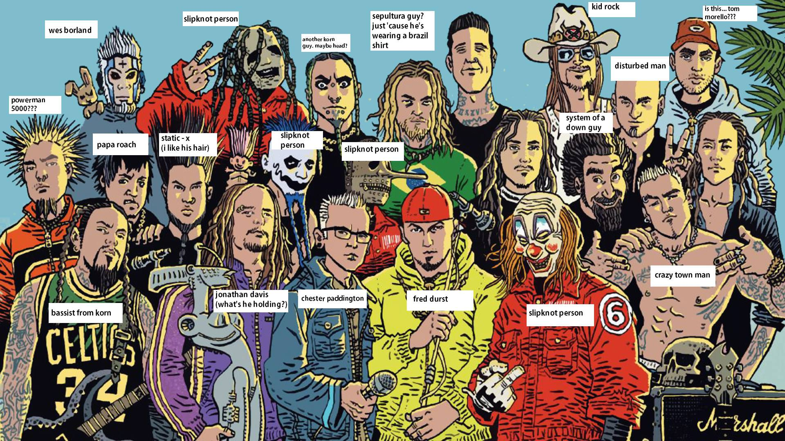
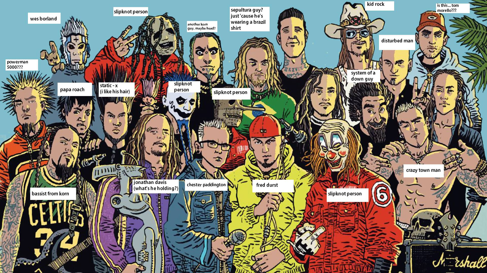

|  |
El nu metal es un género musical de fusión que combina elementos del heavy metal con otros géneros, como el hip hop, el grunge, el rock alternativo y el funk. El género tuvo gran éxito comercial a finales de los 90 y principios del nuevo milenio.
|  |